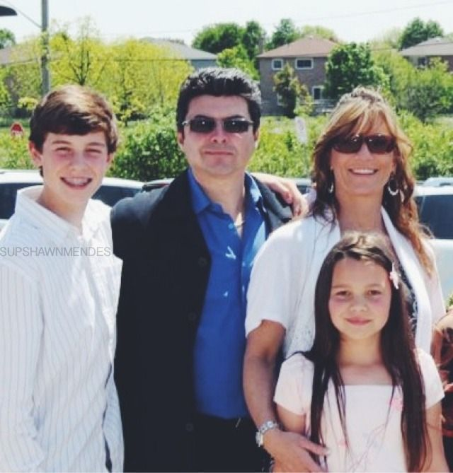

Uppväxt i Pickering, Ontario
Shawn Mendes föddes den 8 augusti 1998 i Pickering, Ontario. Han växte upp i en kärleksfull kanadensisk-portugisisk familj. Hans mamma, Karen, är portugisisk, och hans pappa, Manuel, delar samma bakgrund. Hans familj har alltid varit en stor del av hans stöd genom karriären.
